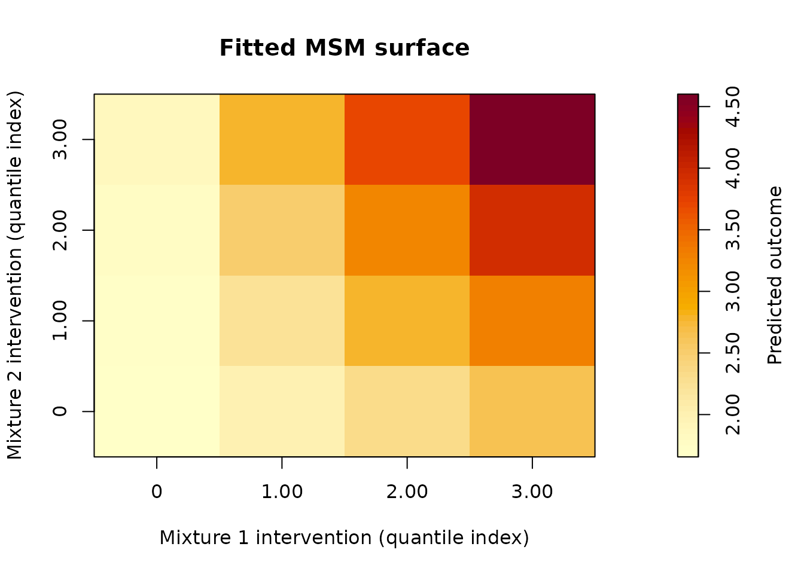
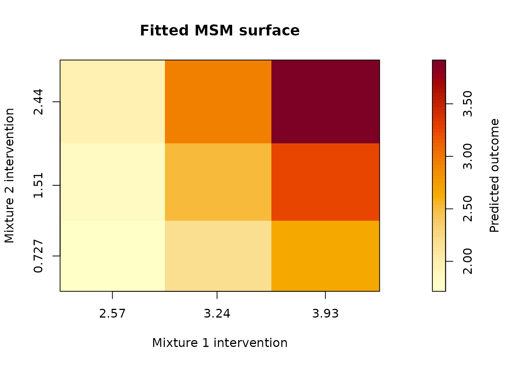

Applied Workflow for Two-Mixture Quantile g-Computation
Source:vignettes/qgcompmulti-workflow.Rmd
qgcompmulti-workflow.RmdIntroduction
qgcomp.multi extends quantile g-computation to settings
with two exposure mixtures and their interaction.
This is the main article to read after the homepage. It walks through a single-dataset analysis from model setup to interpretation, prediction, plotting, and post-fit checks.
The example uses a simulated environmental health dataset with:
- Mixture 1: urinary phthalate metabolites
- Mixture 2: urinary phenol biomarkers
- Outcome: a continuous inflammation score
The package can now do more than it could in the early proof-of-concept stage. The fitted object behaves like an S3 model object, and the package now supports prediction, plotting, diagnostics, sensitivity checks, multiple-imputation workflows, and optional bootstrap-level parallel execution.
This article keeps the focus on the single-dataset applied workflow. Two short companion articles cover:
- multiple imputation and optional bootstrap-level parallelism
- diagnostics, adequacy, and sensitivity checks as a compact post-fit reference
Two distinctions matter throughout:
- the outcome model, which is the regression model you fit to the observed data
- the marginal structural model (MSM), which is the lower-dimensional summary that the package fits to predicted counterfactual means
Those are two distinct objects, and a lot of the interpretation hinges on that.
What This Vignette Covers
This workflow shows:
- a standard quantized fit
- an original-scale fit with
q = NULL - why log transformation and median centering might help with biomarker data
- model extraction with standard S3 generics
- MSM-based prediction and direct contrasts
- exact fit-time surface extraction
- plotting
- intervention support, bootstrap, and adequacy diagnostics
- sensitivity to
MCsize - sensitivity to
q
For native multiple-imputation fitting and optional parallel execution, see the separate companion article on those workflows.
Before You Fit Anything
For an applied analysis, it helps to be explicit about the target before you start.
If you fit a quantized model with q = 4, the package
constructs interventions that move every component in a mixture up by
one quantile category at the same time. The MSM coefficient for
psi1 or psi2 is then a summary of the mean
outcome difference associated with that joint one-quantile shift.
If you fit with q = NULL, the package does not work with
quantile scores. Instead, it builds the intervention grid from pooled
25th, 50th, and 75th percentile values within each mixture on the
analysis scale. In that setting, the coefficients are tied to the
original-scale intervention coding used to fit the MSM.
That choice is important, as it changes both what the model means and how easy it is to explain.
Simulate A Biomarker Dataset
We start with a narrative teaching dataset from
sim_biomarker_data().
library(qgcomp.multi)
dat <- sim_biomarker_data(
n = 600,
include_log = TRUE,
seed = 123
)The raw biomarker concentrations are positive and right-skewed, which is common for urinary biomarker data. Their scales also differ quite a bit across chemicals.
raw_vars <- c(
"mep_ng_ml", "mibp_ng_ml", "mehpp_ng_ml",
"bpa_ng_ml", "bp3_ng_ml", "ppb_ng_ml"
)
round(sapply(dat[raw_vars], median), 2)
#> mep_ng_ml mibp_ng_ml mehpp_ng_ml bpa_ng_ml bp3_ng_ml ppb_ng_ml
#> 62.03 11.94 24.39 2.37 16.07 3.36The dataset also includes:
age_yearsbmi_kg_m2smokerinflammation_score
Logged biomarker variables are included as well:
A Note About Example Settings
Some settings in the code below are smaller than what should be used in a final analysis:
-
B = 20is used to keep the vignette runnable - some sensitivity examples use even smaller
B
In a real application, you would usually increase B
enough that bootstrap intervals and standard errors are stable, and you
would check that your conclusions do not change meaningfully when
MCsize is increased.
Standard Quantized Analysis
We start with a standard quantized fit using the raw biomarker concentrations.
When q is an integer, the exposures are quantized by
rank. A monotone transformation such as log() preserves the
ordering, so users do not need to log-transform first to run a quantized
analysis.
fit_q <- qgcomp.glm.multi(
f = inflammation_score ~
mep_ng_ml + mibp_ng_ml + mehpp_ng_ml +
bpa_ng_ml + bp3_ng_ml + ppb_ng_ml +
age_years + bmi_kg_m2 + smoker,
data = dat,
mix1 = mix1_raw,
mix2 = mix2_raw,
interaction = TRUE,
q = 4,
B = 20,
seed = 13
)Typing the fitted object gives a compact summary:
fit_q
#> qgcompmulti fit
#>
#> Call:
#> qgcomp.glm.multi(f = inflammation_score ~ mep_ng_ml + mibp_ng_ml +
#> mehpp_ng_ml + bpa_ng_ml + bp3_ng_ml + ppb_ng_ml + age_years +
#> bmi_kg_m2 + smoker, data = dat, mix1 = mix1_raw, mix2 = mix2_raw,
#> interaction = TRUE, q = 4, B = 20, seed = 13)
#>
#> Model:
#> Outcome: inflammation_score
#> Family: gaussian (identity)
#> Observations used: 600
#> Exposure mode: Quantized exposures (q = 4)
#> MSM interaction: included
#> Random seed: 13
#>
#> Mixtures:
#> Mixture 1: mep_ng_ml, mibp_ng_ml, mehpp_ng_ml
#> Mixture 2: bpa_ng_ml, bp3_ng_ml, ppb_ng_ml
#>
#> MSM coefficients:
#> Estimate Std. Error z value Pr(>|z|)
#> Intercept 1.656401 0.155914 10.6238 < 2.2e-16 ***
#> Mixture 1 main effect 0.322918 0.087093 3.7077 0.0002091 ***
#> Mixture 2 main effect 0.066344 0.081996 0.8091 0.4184482
#> Mixture interaction 0.197414 0.045568 4.3323 1.476e-05 ***
#> ---
#> Signif. codes: 0 '***' 0.001 '**' 0.01 '*' 0.05 '.' 0.1 ' ' 1summary() gives a fuller report:
summary(fit_q)
#> Summary of qgcompmulti fit
#>
#> Call:
#> qgcomp.glm.multi(f = inflammation_score ~ mep_ng_ml + mibp_ng_ml +
#> mehpp_ng_ml + bpa_ng_ml + bp3_ng_ml + ppb_ng_ml + age_years +
#> bmi_kg_m2 + smoker, data = dat, mix1 = mix1_raw, mix2 = mix2_raw,
#> interaction = TRUE, q = 4, B = 20, seed = 13)
#>
#> Model overview:
#> Formula: inflammation_score ~ mep_ng_ml + mibp_ng_ml + mehpp_ng_ml + bpa_ng_ml + bp3_ng_ml + ppb_ng_ml + age_years + bmi_kg_m2 + smoker
#> Outcome: inflammation_score
#> Family: gaussian (identity)
#> Observations used: 600
#> Exposure mode: Quantized exposures (q = 4)
#> MSM interaction: included
#> Bootstrap replications: 20
#> Monte Carlo size: 600
#> Random seed: 13
#>
#> Mixtures:
#> Mixture 1: mep_ng_ml, mibp_ng_ml, mehpp_ng_ml
#> Mixture 2: bpa_ng_ml, bp3_ng_ml, ppb_ng_ml
#>
#> MSM coefficients:
#> Estimate Std. Error z value Pr(>|z|)
#> Intercept 1.656401 0.155914 10.6238 < 2.2e-16 ***
#> Mixture 1 main effect 0.322918 0.087093 3.7077 0.0002091 ***
#> Mixture 2 main effect 0.066344 0.081996 0.8091 0.4184482
#> Mixture interaction 0.197414 0.045568 4.3323 1.476e-05 ***
#> ---
#> Signif. codes: 0 '***' 0.001 '**' 0.01 '*' 0.05 '.' 0.1 ' ' 1
#>
#> Outcome model context:
#> Model class: glm
#> Estimated parameters: 11
#> AIC: 1549.217
#> Null deviance: 917.218
#> Residual deviance: 446.340Core Model Extractors
The fitted object behaves like a model object, so standard extractors are the cleanest way to pull out specific components.
coef(fit_q)
#> (Intercept) psi1 psi2 psi1:psi2
#> 1.65640052 0.32291824 0.06634411 0.19741425
vcov(fit_q)
#> (Intercept) psi1 psi2 psi1:psi2
#> (Intercept) 0.024309074 -0.011808788 -0.010861856 0.004866723
#> psi1 -0.011808788 0.007585203 0.004883967 -0.003391158
#> psi2 -0.010861856 0.004883967 0.006723304 -0.002855928
#> psi1:psi2 0.004866723 -0.003391158 -0.002855928 0.002076431
confint(fit_q)
#> 2.5 % 97.5 %
#> (Intercept) 1.35081533 1.9619857
#> psi1 0.15221895 0.4936175
#> psi2 -0.09436462 0.2270528
#> psi1:psi2 0.10810285 0.2867256Interpreting The MSM Coefficients
The main estimands are the coefficients of the marginal structural model:
-
psi1: Mixture 1 main effect -
psi2: Mixture 2 main effect -
psi1:psi2: interaction between the two mixtures
For the quantized fit, a one-unit change in the mixture intervention level means a simultaneous one-quantile increase in all components of that mixture.
So here:
-
psi1is the expected change in the outcome for a one-quantile simultaneous increase in the phthalate mixture, when the phenol mixture is held fixed at the reference intervention level used by the MSM (the lowest quantile) -
psi2is the analogous effect for the phenol mixture -
psi1:psi2tells us how the effect of one mixture changes as the intervention level of the other mixture changes
Because the model includes interaction, the main effects are part of a surface. They should not be read as one constant effect that applies everywhere.
There is another point worth stating plainly: these are MSM coefficients. They summarize the intervention-response surface implied by the fitted outcome model. If that surface is close to linear in the intervention coding, the MSM coefficients are easy to read. If the surface is more curved, the same coefficients are still defined, but they are doing more approximation work.
MSM Predictions And Contrasts
The default prediction target is the fitted MSM surface over the stored intervention grid.
pred_q <- predict(fit_q)
head(pred_q$estimates)
#> grid_id psi1 psi2 estimate
#> 1 1 0 0 1.656401
#> 2 2 1 0 1.979319
#> 3 3 2 0 2.302237
#> 4 4 3 0 2.625155
#> 5 5 0 1 1.722745
#> 6 6 1 1 2.243077You can also request a single MSM point prediction:
predict(
fit_q,
type = "msm_point",
at = c(psi1 = 1, psi2 = 2),
interval = TRUE
)
#> $prediction_type
#> [1] "msm_point"
#>
#> $grid_type
#> [1] "point_regime"
#>
#> $grid_scale
#> [1] "msm"
#>
#> $estimand_scale
#> [1] "response"
#>
#> $estimates
#> grid_id psi1 psi2 estimate
#> 1 1 1 2 2.506835
#>
#> $intervals
#> grid_id psi1 psi2 lower upper
#> 1 1 1 2 2.41588 2.582047
#>
#> $interval_type
#> [1] "bootstrap_percentile"
#>
#> $uncertainty_source
#> [1] "stored_bootstrap_draws"
#>
#> $data_supplied
#> [1] FALSE
#>
#> $contrast
#> [1] FALSEAnd you can compare two intervention regimes directly:
predict(
fit_q,
type = "msm_contrast",
from = c(psi1 = 0, psi2 = 0),
to = c(psi1 = 3, psi2 = 3),
interval = TRUE
)
#> $prediction_type
#> [1] "msm_contrast"
#>
#> $grid_type
#> [1] "pairwise_regime"
#>
#> $grid_scale
#> [1] "msm"
#>
#> $estimand_scale
#> [1] "response"
#>
#> $estimates
#> from_psi1 from_psi2 to_psi1 to_psi2 estimate
#> 1 0 0 3 3 2.944515
#>
#> $intervals
#> from_psi1 from_psi2 to_psi1 to_psi2 lower upper
#> 1 0 0 3 3 2.638814 3.304123
#>
#> $interval_type
#> [1] "bootstrap_percentile"
#>
#> $uncertainty_source
#> [1] "stored_bootstrap_draws"
#>
#> $data_supplied
#> [1] FALSE
#>
#> $contrast
#> [1] TRUEIn a manuscript, a contrast like that may be more useful than quoting
psi1 and psi2 alone, because it maps onto a
specific intervention comparison.
Exact Versus MSM Predictions
qgcomp.multi supports two related but different
prediction targets:
- MSM predictions, which come from the fitted low-dimensional marginal structural model
- Exact predictions, which come directly from the fitted outcome model under the specified intervention regimes
The stored fit-time exact surface can be extracted directly:
exact_q <- predict(fit_q, type = "exact")
head(exact_q$estimates)
#> grid_id intervention_psi1 intervention_psi2 msm_psi1 msm_psi2 exact_mean
#> 1 1 0 0 0 0 1.656401
#> 2 2 1 0 1 0 1.979319
#> 3 3 2 0 2 0 2.302237
#> 4 4 3 0 3 0 2.625155
#> 5 5 0 1 0 1 1.722745
#> 6 6 1 1 1 1 2.243077That object contains the exact fit-time counterfactual means that were already computed when the model was fitted.
If you want the exact mean at a regime that is already on the stored grid, you can simply subset the stored surface:
subset(
exact_q$estimates,
intervention_psi1 == 1 & intervention_psi2 == 2
)
#> grid_id intervention_psi1 intervention_psi2 msm_psi1 msm_psi2 exact_mean
#> 10 10 1 2 1 2 2.506835You can also inspect the stored surfaces together:
surf_q <- fitted_surface(fit_q)
names(surf_q)
#> [1] "counterfactual_surface" "msm_surface" "surface_comparison"Why arbitrary exact predictions require user-supplied data
A genuinely new exact prediction is not just a model plug-in value, it is an average of predicted potential outcomes over some covariate distribution.
That is why arbitrary exact prediction requests need user-supplied
data. Without that, the package can only return the
fit-time exact surface that was already stored.
For example, in a quantized fit with q = 4, the stored
grid contains the intervention values 0, 1,
2, and 3. A request like
psi1 = 1.5, psi2 = 2.5 is outside that stored
grid and would require a new exact calculation:
For quantized analyses, interpolation like this is usually not the
main goal. It becomes more natural when q = NULL, because
users may want predictions at custom intervention values on the original
analysis scale.
In Version 0.4.0, bootstrap percentile-based interval
support is attached to MSM-based predictions, but not to arbitrary exact
predictions.
Plot The Fitted MSM Surface
The default plot is a heatmap of the fitted MSM surface.
plot(fit_q)
A contour plot is also available:
plot(fit_q, style = "contour")For uncertainty, the first public plotting form is a slice-based interval display:
This is intended to be a more readable uncertainty display than trying to put intervals directly on a full two-dimensional surface.
Diagnostics For The Quantized Fit
Diagnostics should be part of routine interpretation of the model results.
Intervention Support
support(fit_q)
#> qgcompmulti intervention support diagnostic
#>
#> Mode: quantized
#> Centering: none
#> Grid points: 16
#> Intervention psi1 range: [0, 3.00]
#> Intervention psi2 range: [0, 3.00]For a quantized model with q = 4, the support diagnostic
is straightforward to read because the stored intervention grid is
finite and discrete.
Still, this is not a proof of causal positivity. It tells you which intervention values were used to define the stored surface. It does not prove that every underlying intervention is equally plausible in the source population.
Bootstrap Behavior
diagnostics(fit_q, type = "bootstrap")
#> qgcompmulti bootstrap diagnostic
#>
#> Requested replications: 20
#> Successful replications: 20
#> Failed replications: 0
#> Success rate: 100.000%This reports how many bootstrap replications were requested, how many were retained, and whether any failures were logged.
If failures appear in a real analysis, that is a sign to look more closely at model specification, numerical stability, and sparsity in covariates.
MSM Adequacy
adequacy(fit_q)
#> qgcompmulti MSM adequacy diagnostic
#>
#> Grid points: 16
#> Mean absolute error: 0.000
#> RMSE: 0.000
#> Maximum absolute error: 0.000
#> Mean signed error: 0.000
#> Correlation: 1.000
#>
#> Adequacy compares the exact fit-time counterfactual surface to the fitted MSM surface on the response scale.For this basic quantized fit, the adequacy diagnostic may look nearly perfect. That does not mean the package has shown that the outcome model is correct or that the analysis has recovered the truth.
It answers a narrower question:
Does the fitted MSM do a good job approximating the intervention-response surface implied by the fitted outcome model?
If the fitted outcome model implies a surface that is close to linear in the chosen intervention coding, the exact fit-time surface and the MSM surface can line up almost exactly.
One more caution belongs here. The adequacy diagnostic is checked on
the stored fit-time grid. For a quantized fit with q = 4,
that grid has 16 points. For q = NULL, it has only 9
points. So good adequacy means the MSM works well on that grid. It does
not prove that the exact surface is globally linear between or beyond
those points.
A more informative adequacy example
To see why adequacy matters, fit a second quantized model with a few nonlinear terms in the outcome model:
fit_q_nl <- qgcomp.glm.multi(
f = inflammation_score ~
mep_ng_ml + I(mep_ng_ml^2) +
mibp_ng_ml + I(mibp_ng_ml^2) +
mehpp_ng_ml + I(mehpp_ng_ml^2) +
bpa_ng_ml + bp3_ng_ml + ppb_ng_ml +
age_years + bmi_kg_m2 + smoker,
data = dat,
mix1 = mix1_raw,
mix2 = mix2_raw,
interaction = TRUE,
q = 4,
B = 20,
seed = 2024
)
adequacy(fit_q_nl)
#> qgcompmulti MSM adequacy diagnostic
#>
#> Grid points: 16
#> Mean absolute error: 0.089
#> RMSE: 0.089
#> Maximum absolute error: 0.089
#> Mean signed error: -0.000
#> Correlation: 0.994
#>
#> Adequacy compares the exact fit-time counterfactual surface to the fitted MSM surface on the response scale.This example needs one careful note.
Because q = 4, the package quantizes the mixture
variables before fitting the outcome model. So the terms
mep_ng_ml, I(mep_ng_ml^2), and the rest are
operating on quantized scores derived from the
biomarkers, not on the original continuous biomarker values
themselves.
The point here is to show that once the outcome model implies a more curved intervention-response surface, the linear MSM may no longer be an exact summary of that surface.
What does not change is the meaning of the intervention step itself. In this quantized analysis, a one-unit change in the MSM intervention coding is still a one-quantile simultaneous increase in all components of the mixture.
What changes is how literally you should read the coefficient as a constant increment. With nonlinear terms in the outcome model, the MSM coefficient is better thought of as a low-dimensional summary of the exact fit-time surface.
That is exactly what adequacy() is checking.
If you want nonlinearities on the log scale
If your scientific question is about curvature on the continuous
logged biomarker scale itself, the cleaner demonstration is to use
q = NULL and put the nonlinear terms in that original-scale
outcome model.
The package allows that:
fit_cont_nl <- qgcomp.glm.multi(
f = inflammation_score ~
ln_mep + I(ln_mep^2) +
ln_mibp + I(ln_mibp^2) +
ln_mehpp + I(ln_mehpp^2) +
ln_bpa + ln_bp3 + ln_ppb +
age_years + bmi_kg_m2 + smoker,
data = dat,
mix1 = mix1_log,
mix2 = mix2_log,
interaction = TRUE,
q = NULL,
centering = "median",
B = 20,
seed = 2024
)
adequacy(fit_cont_nl)That is a different teaching example. There, the nonlinear terms really are nonlinearities in the continuous logged exposures, and the adequacy diagnostic is asking whether the linear MSM is still a reasonable summary over the stored original-scale intervention grid.
Original-Scale Fitting With q = NULL
The main reason to use q = NULL is that you want the
outcome model and the intervention grid to live on the analysis scale
you care about, rather than on quantile categories.
For biomarker concentrations, that choice is important. Here the logged scale is easier to work with than the raw concentration scale because:
- the biomarkers are right-skewed
- the raw scales differ substantially across chemicals
- a log scale makes multiplicative differences easier to interpret
- pooled percentile interventions are less awkward on the log scale than on the raw scale
So for the q = NULL fit, we use the logged
biomarkers.
fit_cont <- qgcomp.glm.multi(
f = inflammation_score ~
ln_mep + ln_mibp + ln_mehpp +
ln_bpa + ln_bp3 + ln_ppb +
age_years + bmi_kg_m2 + smoker,
data = dat,
mix1 = mix1_log,
mix2 = mix2_log,
interaction = TRUE,
q = NULL,
centering = "median",
B = 20,
seed = 2024
)
summary(fit_cont)
#> Summary of qgcompmulti fit
#>
#> Call:
#> qgcomp.glm.multi(f = inflammation_score ~ ln_mep + ln_mibp +
#> ln_mehpp + ln_bpa + ln_bp3 + ln_ppb + age_years + bmi_kg_m2 +
#> smoker, data = dat, mix1 = mix1_log, mix2 = mix2_log, interaction = TRUE,
#> q = NULL, centering = "median", B = 20, seed = 2024)
#>
#> Model overview:
#> Formula: inflammation_score ~ ln_mep + ln_mibp + ln_mehpp + ln_bpa + ln_bp3 + ln_ppb + age_years + bmi_kg_m2 + smoker
#> Outcome: inflammation_score
#> Family: gaussian (identity)
#> Observations used: 600
#> Exposure mode: Original-scale exposures (centering = "median")
#> MSM interaction: included
#> Bootstrap replications: 20
#> Monte Carlo size: 600
#> Random seed: 2024
#>
#> Mixtures:
#> Mixture 1: ln_mep, ln_mibp, ln_mehpp
#> Mixture 2: ln_bpa, ln_bp3, ln_ppb
#>
#> MSM coefficients:
#> Estimate Std. Error z value Pr(>|z|)
#> Intercept 2.527493 0.116676 21.6626 < 2.2e-16 ***
#> Mixture 1 main effect 1.039753 0.073995 14.0517 < 2.2e-16 ***
#> Mixture 2 main effect 0.433838 0.047862 9.0644 < 2.2e-16 ***
#> Mixture interaction 0.420631 0.132723 3.1692 0.001528 **
#> ---
#> Signif. codes: 0 '***' 0.001 '**' 0.01 '*' 0.05 '.' 0.1 ' ' 1
#>
#> Outcome model context:
#> Model class: glm
#> Estimated parameters: 11
#> AIC: 1469.749
#> Null deviance: 917.218
#> Residual deviance: 390.971What the q = NULL intervention means
When q = NULL, the package builds a fit-time
3 x 3 intervention grid from pooled 25th, 50th, and 75th
percentile values within each mixture. Under a given intervention, every
component in a mixture is set to the same pooled mixture-specific value
on the analysis scale.
That is not a one-quantile shift. It is an original-scale joint intervention defined by those common pooled percentile values.
For some applications that is useful, but for others it may feel artificial. That is a judgement call on the part of the analyst, so it is better to say it directly.
Why median centering helps here
With centering = "median", the MSM is fit using
intervention values centered at the pooled median within each mixture.
The outcome model itself is unchanged; the centering only changes the
MSM coding.
That makes the intercept easier to interpret, particularly with log-transformed exposures. It now corresponds to the predicted outcome when both mixtures are set to their pooled median biomarker values.
That is usually more interpretable than an intercept tied to some arbitrary reference value on the raw concentration scale, as zero on the log-scale does not correspond to “no exposure”.
Parameter interpretation in this setting is:
-
psi1is the expected change in outcome for a one-unit increase the mixture 1 components, when the elements of mixture 2 are held constant at their pooled median -
psi2is the analogous one-unit change for mixture 2 on that same MSM scale -
psi1:psi2describes how the slope for one mixture changes as the intervention level of the other mixture changes
So here, the coefficients are tied to the original-scale intervention structure used to fit the MSM. They are not one-quantile effects.
Prediction, Plotting, And Diagnostics For The q = NULL
Fit
The same downstream workflow works for the original-scale fit.
When centering = "median" and you request MSM
predictions, the prediction points are on the reparameterized MSM scale.
In practice, that means (0, 0) corresponds to the pooled
median intervention for both mixtures.
predict(
fit_cont,
type = "msm_point",
at = c(psi1 = 0, psi2 = 0),
interval = TRUE
)
#> $prediction_type
#> [1] "msm_point"
#>
#> $grid_type
#> [1] "point_regime"
#>
#> $grid_scale
#> [1] "msm"
#>
#> $estimand_scale
#> [1] "response"
#>
#> $estimates
#> grid_id psi1 psi2 estimate
#> 1 1 0 0 2.527493
#>
#> $intervals
#> grid_id psi1 psi2 lower upper
#> 1 1 0 0 2.299366 2.704215
#>
#> $interval_type
#> [1] "bootstrap_percentile"
#>
#> $uncertainty_source
#> [1] "stored_bootstrap_draws"
#>
#> $data_supplied
#> [1] FALSE
#>
#> $contrast
#> [1] FALSE
plot(fit_cont)
For q = NULL heatmaps, the axis labels are shown on the
intervention value scale rather than on the centered MSM scale.
support(fit_cont)
#> qgcompmulti intervention support diagnostic
#>
#> Mode: original_scale
#> Centering: median
#> Grid points: 9
#> Intervention psi1 range: [2.57, 3.93]
#> Intervention psi2 range: [0.727, 2.44]
#> Support note:
#> - Intervention support is defined by pooled marginal percentile values for each mixture.
#> - For original-scale fits, these grid values may be less comparable when the two mixtures live on very different scales.The support diagnostic matters more here than it did in the quantized example, because the intervention grid now depends directly on the analysis scale and the pooled percentile construction.
Two cautions are worth keeping in mind:
- if mixture components live on very different scales, a common pooled value may be harder to interpret
- good-looking support output still does not mean the intervention is scientifically realistic or policy-relevant
In practice, if the intervention grid looks awkward on the raw scale, that is a good reason to consider transformation, standardization, or a return to a quantized analysis.
Sensitivity To Monte Carlo Size
The mcsize_sensitivity() helper compares repeated fits
while changing only the Monte Carlo approximation size.
mcsize_sensitivity(
f = inflammation_score ~
mep_ng_ml + mibp_ng_ml + mehpp_ng_ml +
bpa_ng_ml + bp3_ng_ml + ppb_ng_ml +
age_years + bmi_kg_m2 + smoker,
data = dat,
mix1 = mix1_raw,
mix2 = mix2_raw,
MCsize_values = c(300, 600),
interaction = TRUE,
q = 4,
B = 20,
seed = 2024,
keep_fits = FALSE
)
#> qgcompmulti MCsize sensitivity
#>
#> Only MCsize varies across refits; all other analysis settings are held fixed.
#>
#> MCsize psi1 psi2 psi1_se psi2_se adequacy_mae adequacy_rmse
#> 300 0.3229182 0.06634411 0.1074067 0.1025973 1.383615e-14 1.386301e-14
#> 600 0.3229182 0.06634411 0.1074067 0.1025973 2.757516e-14 2.773075e-14
#> adequacy_max_abs_error bootstrap_success bootstrap_failed
#> 1.532108e-14 20 0
#> 3.352874e-14 20 0
#> bootstrap_success_rate surface_range psi12 psi12_se
#> 1 2.944515 0.1974142 0.06905813
#> 1 2.944515 0.1974142 0.06905813The point is not to discover one correct MCsize, but to
see whether the estimated coefficients, adequacy summaries, and
bootstrap behavior are reasonably stable as the approximation
changes.
Sensitivity To q
The q_sensitivity() helper holds the rest of the
analysis fixed while varying the number of quantization levels.
q_sensitivity(
f = inflammation_score ~
mep_ng_ml + mibp_ng_ml + mehpp_ng_ml +
bpa_ng_ml + bp3_ng_ml + ppb_ng_ml +
age_years + bmi_kg_m2 + smoker,
data = dat,
mix1 = mix1_raw,
mix2 = mix2_raw,
q_values = c(3, 4),
interaction = TRUE,
B = 8,
MCsize = nrow(dat),
seed = 2024,
keep_fits = FALSE
)
#> qgcompmulti q sensitivity
#>
#> Only q varies across refits; all other analysis settings are held fixed.
#>
#> Comparability note:
#> Raw MSM coefficients are not directly comparable across different choices of q. A larger q implies a smaller one-quantile intervention step, so smaller coefficient magnitudes may be expected mechanically rather than indicating a weaker overall mixture effect.
#>
#> q psi1 psi2 psi1_se psi2_se adequacy_mae adequacy_rmse
#> 3 0.4096250 0.10195058 0.14613491 0.11513263 6.414622e-16 7.475135e-16
#> 4 0.3229182 0.06634411 0.09173408 0.07558883 2.757516e-14 2.773075e-14
#> adequacy_max_abs_error bootstrap_success bootstrap_failed
#> 1.332268e-15 8 0
#> 3.352874e-14 8 0
#> bootstrap_success_rate surface_range psi12 psi12_se
#> 1 2.702586 0.4198586 0.1262115
#> 1 2.944515 0.1974142 0.0592206The package warns that raw coefficient magnitudes are not
directly comparable across different choices of
q.
A larger q means a smaller one-quantile step, so smaller
coefficients can appear for purely mechanical reasons even when the
substantive pattern is basically unchanged.
This helper is best treated as a robustness check, not a way to rank effect sizes across different quantization choices.
What An Applied User Should Check In A Real Analysis
In a real environmental epidemiology analysis, the analyst should think through the following:
- whether the two mixtures were defined a priori or after looking at the data
- whether the outcome model includes the covariates needed for exchangeability
- whether the exposure scale is scientifically sensible for the question at hand
- whether a quantized analysis or an original-scale analysis is easier to defend
- whether the support diagnostic reveals intervention values that are hard to interpret
- whether the adequacy diagnostic suggests the MSM is too crude a summary
- whether results are stable to larger
B, largerMCsize, and reasonable changes inq
Practical Takeaways
This workflow suggests a workable way to use
qgcomp.multi:
- Start with a standard quantized fit when you want a familiar rank-based analysis and an intervention that is easy to explain.
- Use MSM predictions, contrasts, and plots to understand the fitted intervention-response surface.
- Check support, bootstrap behavior, and adequacy before you get too attached to a coefficient table.
- Move to
q = NULLwhen the original analysis scale matters enough to justify the more complicated intervention definition. - For biomarker concentrations, log transformation plus median centering often makes original-scale summaries easier to read.
- Use the sensitivity helpers to look for instability.